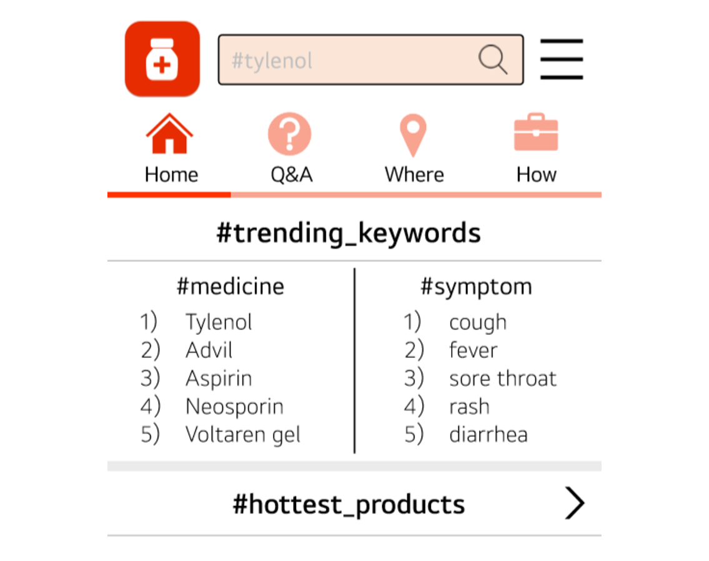

About

Hi! I'm Lyra Lee.
I am an innovator who can scrutinize the reality and transform the solution, converting ideas to impact for the benefit of all.
I walked into Computer Science through my educational service for the disabled, after one of my students said, “I dream of becoming a programmer.” The service usually involves teaching basic IT skills such as Microsoft Office, but I went beyond to prepare our own class materials with Scratch and Entry. Even though her intellectual disability hindered her learning, her satisfaction upon getting a taste of coding drove me further to take responsibility and spend ample time thoroughly understanding the codes so I would be fully prepared to teach them.
That is when I gradually saw myself intrigued by the infinite capabilities of coding, with an insatiable curiosity and urge to expand across diverse languages and extend my skills.
Portfolio
-
Project 1
- Collaborated with a team member to redesign the Arcade Game ‘JetPac Man’ with Java
- Implemented moving objects and stationary objects with animation in JFrame
- Effectively handled collisions between hero, aliens, platforms, spaceships, and bullets
-
Project 2

- Authored “Mathematical Modeling for Atmospheric Fine-Dust Removal Through the Photoelectric Effect of Chlorophyll”
- Recognized by Samsung Electronics Co. at second place in Samsung Humantech Paper Competition
- Created a mathematical model to evaluate the efficiency of the photoelectric effect and a program to calculate the area ratio of fine dust by utilizing C programming
-
Project 3
- Developed a user-friendly pharmaceutical database application through Protopie, with accessibility features including pictograms and dictionary-linked translations
- Recognized at 1st place with the Grand Prize of the Korea Youth Start-up Competition, leading to a patent in “Medical Supplies Platform Application”
-
Project 4
- Pair programmed to create an informational program through Java in an MVC framework, that categorizes and provides details of festivals in Korea by numerous search filters such as month and season
- Employed web crawling on a governmental festivals hub website to collect data on their name, date, location, and description, processing them into a database with Oracle SQL
-
Project 5

- Brought forth innovative ideas in order to start up a new branch in the company
- Devised a business plan to supply the demand of adults learning foreign language
- Designed a webpage considering user interface design
Resume
Objective
Seeking an internship in the field of computer science or software development
Education
Bachelor of Science, Computer Science and Software Engineering May 2024, GPA 3.6/4.0
- Relevant Courses: Data Structure & Algorithm Analysis, Object-Oriented Software Development, Intro to Web Programming, Intro to Computer Systems, Practical Security
Cheongshim International Academy (CSIA), Gapyeong, South Korea Feb 2020, GPA 3.9/4.0
- Achievements: Annual Honor Roll, Award of Service
Honors
- Samsung Humantech Paper Competition, Silver Prize
- Korea Presidential Science Scholarship, funded by the Republic of Korea
- Korea Youth Start-up Competition, Grand Prize
- Dean’s List, Noblitt Scholar, and Rose Hulman Merit Scholar
Skills
- Computer:
- Java, JavaScript, C, Python, Linux, SQL, HTML, CSS, JSP, DBMS, jQuery, AJAX, JSON, XML, Kali, Git, R, Maple, Protopie, Xilinx ISE, Microsoft Office Suite
- Personal:
- Problem-solving, Teamwork, Leadership, Communication, Collaboration, Creativity, Initiative
Experience
-
Rose-Hulman Institute of Technology,
Sept 2020 - Nov 2020
Capstone Project for Object-Oriented Software Development
Terre Haute, IN
- Collaborated with a team member to redesign the Arcade Game ‘JetPac Man’ with Java
- Implemented moving objects and stationary objects with animation in JFrame
- Effectively handled collisions between hero, aliens, platforms, spaceships, and bullets
-
Independent Environmental Research,
Mar 2017 - Dec 2018
Presenter and Researcher
Gapyeong, South Korea
- Authored “Mathematical Modeling for Atmospheric Fine-Dust Removal Through the Photoelectric Effect of Chlorophyll”
- Recognized by Samsung Electronics Co. at second place in Samsung Humantech Paper Competition
- Created a mathematical model to evaluate the efficiency of the photoelectric effect and a program to calculate the area ratio of fine dust by utilizing C programming
-
CSIA ENIGMA
Mar 2016 - Dec 2019
Founder and Leader
Gapyeong, South Korea
- Led a social enterprise with the mission to alleviate the disparity in access to medical information
- Developed a user-friendly pharmaceutical database application through Protopie, with accessibility features including pictograms and dictionary-linked translations
- Recognized at 1st place with the Grand Prize of the Korea Youth Start-up Competition, leading to a patent in “Medical Supplies Platform Application”
Activities
- CSIA Cross Country, Team Captain
- Women of Like Fields Passionate About Computing
- Computer Security Club
- RHIT Dance Company
- Society of Women Engineers